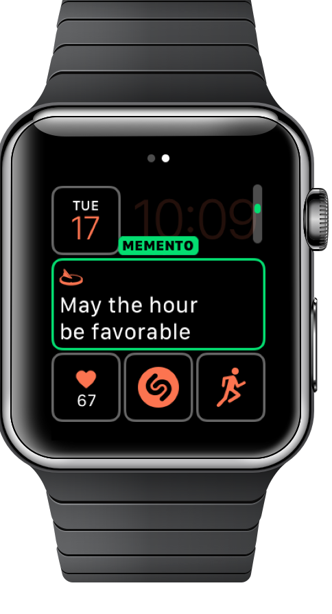

Memento Mori
The association of sundials with time has inspired their designers over the centuries to display mottoes as part of the design. Often these cast the device in the role of memento mori, inviting the observer to reflect on the transience of the world and the inevitability of death. – Wikipedia

This rich tradition is now available on Apple Watch.